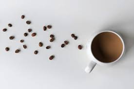
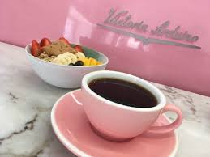
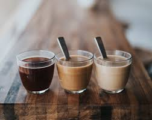

Light Roast
Light roasts feature bright acidity and delicate floral or fruity notes. Their subtle complexity pairs beautifully with:
Sweet Treats
- Fresh fruit tarts
- Lemon pound cake
- Shortbread cookies
- Vanilla scones
Savory Options
- Mild cheeses like brie
- Egg dishes
- Avocado toast
- Croissants

Medium Roast
Medium roasts offer balanced flavors with nutty or caramel notes and moderate acidity. They pair wonderfully with:
Sweet Treats
- Caramel desserts
- Cinnamon rolls
- Chocolate chip cookies
- Apple pastries
Savory Options
- Breakfast sandwiches
- Toasted nuts
- Aged cheeses
- French toast

Dark Roast
Dark roasts feature bold, rich flavors with smoky or chocolate undertones. Their robust character complements:
Sweet Treats
- Dark chocolate desserts
- Tiramisu
- Pecan pie
- Chocolate truffles
Savory Options
- Smoked meats
- Blue cheese
- Dark bread
- Spicy dishes

Espresso
Concentrated and intense, espresso has deep flavors that stand up well to stronger taste profiles:
Sweet Treats
- Biscotti
- Chocolate-dipped biscuits
- Cannoli
- Baklava
Savory Options
- Almond croissants
- Sharp cheeses
- Savory pastries
- Prosciutto

Flavored Coffee
Flavored coffees like vanilla, hazelnut, or caramel need complementary pairings that won't overwhelm:
Sweet Treats
- Plain butter cookies
- Angel food cake
- Vanilla ice cream
- Simple pastries
Savory Options
- Plain bagels
- Cream cheese
- Mild crackers
- Butter croissants

Cold Brew
Smooth and less acidic, cold brew's gentle sweetness pairs beautifully with:
Sweet Treats
- Berry tarts
- Chocolate mousse
- Coconut macaroons
- Caramel brownies
Savory Options
- Chicken salad sandwiches
- Greek yogurt
- Fruit and cheese plates
- Summer salads